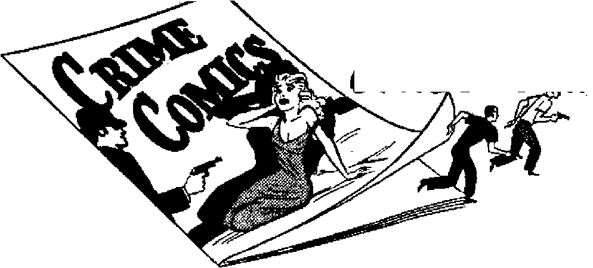
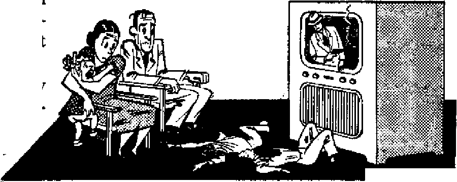
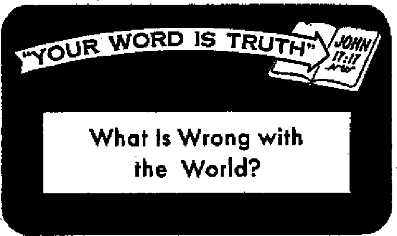

WHY THE BIBLE IS TRUE
Do you believe it? Can you prove your view?
On the Earth Anguish of Nations”
The real meaning of the world’s present fear
Civil War Rocks Guatemala
An internal view of that land’s turmoil
rime Comics Produce Child Criminals
Do your children have these low-priced handbooks of crime?
OCTOBER 8, 1954 semimonthly
THE MISSION OF THIS JOURNAL
Nrwtf sources that arc able to keep you awake to the vital issues of our timeu must be unfettered by censorship and selfish Interests. "Awake!” has no fetters, it recognizes facts, faces facts, la free to publish facts. It la not bound By political ambitions or obligations^ it Is unhampered by advertisers whose toes must not be trodden on; it is unprejudiced by traditional creeds. This journal keeps itself free that it may speak freely to you. But it does not abuse its freedom. It maintains integrity to truth.
“Awake 1” uses the regular news channels, but is not dependent on them. Its own correspondents are on all continents, in scores of nations. From the four corners of the earth their uncensored, ©n~the*Bcenes reports come to you through these columns. This journal's viewpoint is not narrow, but is international. It is read in many nations, in many languages, by persons of all ages. Through Its pages many fields of knowledge pass in review—government, commerce, religion, history, geography> science, social conditions, natural wonders—why, its cover* age is as broad as the earth and as high as the heavens.
“Awake I” pledges itself to righteous principles, to exposing hidden foes and subtle dangers, to championing freedom for all, to comforting mourners and strengthening those disheartened by the failures of a delinquent world, reflecting sure hope for the establishment of a right* eous New World.
Get acquainted with “Awake!" Keep awake by reading “AwakeI”
Published Semimonthly Bt WATCHTOWER BIBLE AND TRACT SOCIETY, INC.
117 Adams Street
N, H. Knou, President
Printing this issue: 1,250,000
Brooklyn 1, N. IL 8. A.. Grant BuiTun, Secretary
Five cents a copy
LaniiiRB in whlrt thb «a|ulM It HNhhU: Semimonthly—Afrikixns, English, Finnish, French, Germtn, HolUndluh, Norreiian, Spinith, Swedish. Monthly—Danish, Greek, Portuguese. Ukriinlin,
Qfffcej Ywly subscription Rite
AmrteBt lf.6.1 nr Adams St., Brooklyn 1, N.Y. Si Aiitr*lli, 11 Beresford Bd., Strethflcld, N.s.w, Su Canid*. 40 Irwin Ave., Toronto A, Ontario fl Enilftnd, 34 CrtveD Terrier, London, W. 2 7s
Sovtk AfrlMj Private Bai, P.O. fflindsfooteln,
Trauni! 7s
Rotered as wrond-elt« matter at Brooklyn, N. Y.
ftsnrittafltu should be wnt to office In your country In compliinee with reculaUona lo guarantee safe delivery of money. Remittances are accepted al Brooklyn from countries where no office is located, by InteiTtitlonal money order wily. Subscription rates h different countries are here stated in lueul currency. Not Im of extlHrflM (with renewal blank) U cent at least two usues before subscription expires. Ghanp* if address when sent to our office may be expected effective within one month. Berni your old as weU at new address.
Act at March 3, 1379. Prlnkrf In U, B. A.
CONTENTS
“On the Earth Anguish of Nations”
The Greatest Proof—Bible Prophecy
Barks and Ballots in British Honduras 12
Crime Comics Produce Child Criminals
When Animals Thirst for Excitement
Prince Pursues Purse Snatchers
“Your Word Is Truth”
What Is Wrong with the World? 25 Jehovah's Witnesses Preach in All
the Earth—Netherlands West Indies 27
Do You Know? 28
Watching the World 29
Volume XXXV
Brooklyn, N. Octobers, 1954
Number 19
HAVE you often wondered why the nations tremble today as if they were teeter-tottering on the brink of a rumbling volcano? Do you wonder why two world wars have failed to salve the anguish of the nations? Do you wonder why intelligent men, the very cream of human brains, are unable to put into practice their clever ideas for easing world tension? Do you wonder why statesmen wrangle in conferences day after day, only to settle little or nothing? Do you wonder why one of the odd characteristics of our time is that people and nations fear the future? Well, then, you will want the right answer.
But to say that men are just more wicked than ever before is hardly the answer. There must be a bigger reason why the nations are more perplexed than ever before. That reason is found, not in the high-sounding words of clergymen and politicians, but in the easy-to-understand words of Christ Jesus. You may remember that the disciples asked the great Prophet for the sign of his second presence and of the end of the system of things. In reply Jesus gave a concrete sign, one that people, if they were only willing to open their eyes, could easily see. This sign involved the appearance upon one generation of several calamitous happenings, such as world wars, famines, pestilences and earthquakes. Now at Luke 21:25 (New World Trans.) Jesus added that there would be “on the earth anguish of nations, not knowing the way out because of the roaring of the sea and its agitation, while men become faint out of fear and expectation of the things coming upon the inhabited earth.”
If those words had been spoken by a statesman today what would we think? Little, perhaps, except that he had well described the present troubled world. But, remember, those words were not spoken in 1954 but over 1,900 years ago. That should make us stop and think! Yet many who read those words of the Son of God laughingly scoff and say, “Well, we can’t be sure; we’ve always had bad times.” Such persons would never have Jesus’ words come true. They are asleep. They have closed their eyes to the “anguish of nations” today.
When we do open our eyes we see nations of people faint out of fear over the threat of atomic and hydrogen bombing. Men once looked forward to the future, if not with confidence, at least with hope. Now all is changed. Men fear the future. And they do not know the way out. “We have come to the crossroads,” H. G. Wells once said, “and no one knows the way out.” So it is not just this or that country, but every nation is flooded by the sea of anguish, and as never before. Declared 79-year-old Winston Churchill: “Matters are becoming more and more tangled and complicated here and abroad than I can remember in my long experience.”—Time, May 10, 1954.
Do we see it, then, “on the earth anguish of nations”? Sorely perplexed is the United States' as to what foreign policy it should take. With the United States other nations shudder over the aims of communism, fret over inflation and worry about a recession. Kings and presidents are deposed. Lawmakers cannot agree. Parliaments writhe in confusion. In May, Japan’s Parliament rioted. Men and women legislators in session cuffed, clawed and pulled hair. Japan's premier had to admit that its Parliament “is now in the most chaotic condition in its history.” Almost monthly (watch the newspapers) revolutions break out. This year one Central American country had its tenth revolution since 1948. Governments totter. They fall sick to death. In June the nineteenth postwar government of France died. Nations mistrust or suspect their top-ranking men. Bloody riots, border wars and guerrilla fighting dot the earth. Anguish has the address of all nations.
But what has caused the fulfillment of Jesus’ anguish-of-nations prophecy? War in heaven. The result of this war is given at Revelation 12:12 (New World Trans.): “Woe for the earth and for the sea, because the Devil has come down to you, having great anger, knowing he has a short period of time.” So, plummeted down to the earth are the Devil and his demons. It is these invisible, satanie forces that really whip up violence and anguish on earth.
But do not lose heart. This is no time for sadness, gloom. If your eyes see the “anguish of nations,” together with the other features of the “last days” sign, this is a time of great joy for you. “But as these things start to occur,” explained Jesus, “raise yourselves erect and lift your heads up, because your deliverance is getting near.” (Luke 21:28, New World Trans.)
Truly, then, if your eyes really see, these are the best of times; the “last days” of Satan’s rule over mankind are now here. The war of Armageddon impends; righteous conditions Will follow.
So rejoice and lift up your head. Do not be downcast or say, “Things are the same as they always have been.” They are not. Besides, those who talk in that we-don’t-see-it manner only make themselves part of the “last days” sign; “In the last days there will come ridiculers,” wrote the apostle of Christ. And what will they say? “Why, from the day our forefathers fell asleep in death, all things are continuing exactly as from creation’s beginning.” So with the sign so overwhelmingly clear, do not scoff. Because “the heavens and the earth that are now are stored up for fire and are being reserved to the day of judgment and of destruction of the ungodly men,” at Armageddon.—2 Peter 3:3, 4, 7, New World Trans.
But in spite of the impending end of this system of things we can be happy, as Peter goes on to explain: “There are new heavens and a new earth that we are awaiting according to his promise, and in these righteousness is to dwell.” No “anguish of nations” will ever disturb that new world. Lifted forever will be the veil of fear that has enveloped all nations. This Jehovah God promises: “He will destroy in this mountain the face of the covering that covereth all peoples, and the veil that is spread over all nations. He hath swallowed up death for ever; and the Lord Jehovah will wipe away tears from off all faces.” —2 Peter .3:13, New World Trans.; Isaiah 25:7, 8, Am. Stan. Ver.
But even now tears can be wiped from your eyes. Fbr if you see “on the earth anguish of nations” and know its rich meaning, “happy are your eyes because they behold.”—Matthew 13:16, New World Trans.
Tte Bibta is not only tfete moat widely frinshted ibd distributed book of *11 time hut also the most violently opposed book* And just *• ardently end in&neely ■« it* friend* love end atpouae it, just *o bitterly end malevolently do it* enemie* hate, and attack it and seek to destroy it* influence* From what follow* it will be seen that the Bible i* equal to tbe attack* made upon it by it* would-be detractor*.
THE Bible true? Ridiculous! shouts the atheist as well as the agnostic and the deist. Why, it reeks with filth and is full of contradictions!
The Bible true? Impossible! cries the evolutionist. Why, it contradicts all known science with its stories of creation, the flood and the sun’s standing still!
The Bible true? Surely you do not mean all of it? with feigned incredulity asks the higher critic. Do not think for a moment that its narratives are based on actual history. We must be selective when we read the Bible and differentiate between the wheat of wise sayings and beautiful moral principles and the chaff of legends, myths and old wives’ fables. So says the higher critic.
The Bible true? Now you would not be implying that we ought to take its teachings seriously, would you? cynically queries the modernist. Why, to do that would land you in a mental institution. Its philosophy simply cannot be applied in this hydrogen-bomb age.
Nevertheless, the footstep follower of Christ Jesus stands squarely on the position taken by his Master, namely: “Thy word is truth.” (John 17:17) The Bible being God’s Word, it must be true, it cannot be charged with contradictions and filth, it must harmonize with proved science, its narratives must be historically accurate. All of it must be true, not just a part of it, for if it were to be left up to the reader to determine, then it would be that each reader would be Infallible instead of the Bible. As God’s Word for all mankind it must be applicable at all times and in all parts of the earth, which means that we are obligated to accept it as our pattern for both faith and works, not contenting ourselves merely to give it lip service as so many of its professed friends do.
The Bible Contradictory and Filthy?
The charges that the Bible contradicts itself and is filthy, as made by the atheists and others, should not disturb Bible lovers. The Bible having been written from nineteen to thirty-five centuries ago, by many different persons, in widely separated parts of the earth and in several different languages, it is to be expected that apparent contradictions could be found by those looking for such. But invariably it has been found that further research has solved the difficulty, often its being a matter of poor translation, ignoring the context, failing to distinguish between literal and figurative language, such as when we read on die one hand that "the earth abideth for ever,’* and on the other hand that "the earth also and the works that are therein shall be burned up.”—Ecclesiastes 1:4; 2 Peter 3:10.
It all depends upon the attitude of the one reading the Bible. If one is reading it to find fault he will pounce on every seeming contradiction without searching further for an explanation, failing to use both common sense and objectivity. And this is also true regarding those who so blatantly shout that the Bible is full of filth. The Bible’s use of frankness in describing certain historical events can by no stretch of the imagination be termed filthy. Neither its purpose nor its manner of recording these events is such as to arouse the base passions unless the mind is already corrupt or blinded by prejudice. To the pure all things are pure, and far from encouraging immorality, as so much of modem literature does, it, time without number, shows that “the wages of sin is death.”—Romans 6:23.
The Bible Unscientific?
The evolutionist claims the Bible is unscientific, but what are the facts? At present the universe is held to be from three to four billion years old; a few years ago its age was estimated at one half of that. The Bible avoids contradicting science by simply stating: "In the beginning God created the heaven and the earth.” (Genesis 1:1) It does not fix the time of that beginning. As for the days of creation, there is absolutely no reason for arbitrarily insisting that these were 24-hour days; rather, the evidence is to the contrary, Not only do we note that the luminaries that separate day from night did not shine through to the earth until the fourth day, but that thousands of years later God is spoken of as still resting. If the seventh day is a long period of time it is reasonable to conclude that the other six are likewise long periods of time.—See Psalm 95:11; Hebrews 4:1-11,
The order of creation: first light, then atmosphere, then separation of water from land and then plant life, then the appearance of the luminaries in the sky, then marine life, then winged creatures, mammals and finally man, is in perfect accord with the evidence that geology presents in fossil remains. And while evolutionists claim that all species or kinds of animals are related, having a common origin, yet the evidence from fossils supports the Bible account of each being created after its own kind, for it reveals no bridges or gradual development of new forms or species, rather they all appeared suddenly. Evolutionists have to admit that the fossil record has “all the unsatisfactory characteristics of absolute creation.”
As for the Deluge, it is no mere coincidence that some ninety different native peoples in all parts of the globe have legends regarding the Flood. The ark’s measurements are scientifically accurate and it was large enough to house the some 130 basic kinds that can account for all mammals, reptiles and winged creatures on earth today, even as the entire human race can be traced to Noah, from the African pygmy to the tallest Nordic European -types. Arguing for a deluge, such as noted in Genesis, is the eight-foot layer of clean clay separating civilizations, as found in recent years by archaeologists in Asia Minor, the known cradle of humanity. Evidence of the Noachian cataclysm is further seen in cemeteries of millions of elephants, mammoths and rhinoceroses found in many parts of the world.
Even the many laws given to Moses relating to health make sense in the light of modem medical knowledge. Lepers were quarantined; today no child under ten years
is permitted to enter Carville, Louisiana, where those suffering with Hansen’s disease (leprosy) are quarantined. The Israelites were not permitted to eat animals that had died of themselves, and many of the animals declared unclean in their law have disease tendencies that make them suspect even today in Western lands. As for the sun’s standing still, the facts are that many ancient peoples have legends of either such a very long day or a corresponding long night, depending upon their location. True, it was not the sun that stood still, but do we not still speak of the sun as rising and setting when it actually does no such thing, but merely does this from man’s viewpoint?
Nonhiatorical?
The claim that the Bible is not a historical document but a collection of myths and legends has been amply refuted by the discoveries cf archaeologists. The Bible has been proved right and secular historians wrong or incomplete on such facts as the prominence it gives to the Hittites, its depicting monotheism as the first form of religion, its reconi regarding the destruction of Jericho, the identity of Bel-shajoar, etc.
Says Duncan in Accuracy of Old Testament in Light of Recent Palestinian A/-chaeology: ”1 do not think it will be long possible, even if it is now possible, for us to deny the remarkable accuracy of the Old Testament. Incidents hitherto regarded as legend, have been proved historical by recent discovery. , . . There is actual history at the back of all the narratives.” And says another authority: “In respect of that part of the Old Testament against which the disintegrating criticism of the last half of the nineteenth century was chiefly directed, the evidence of archaeology has been to re-establish its authority, and likewise augment its value hy rendering it more intelligible through a fuller knowledge of its background and setting." —The Bible and Archaeology, Albright.
In passing let it be noted that all this is in striking contrast with the way the anti-Bible theories have fared in the face of increased knowledge. Thus Mendel’s laws, Pasteur’s experiments, the radiocarbon clock have all played havoc with pet theories held by evolutionists, not to say anything of hoax after hoax being uncovered exposing the dishonesty of the evolutionists, such as that of the Piltdown man.
Impractical far Our Day?
Those who claim the Bible is impractical for our day simply have not tried to apply its principles. The Bible is both practical and practicable; that is, it both pays to practice its principles and they can be put into practice, they are not merely beautiful high-sounding phrases, incapable of being applied.
Today in Palestine the Israelis are making use of the Bible’s historical features in the furtherance of mining and agriculture. Psychologists recognize, that is, many of them, that the Bible has a therapeutic value, for it gives the mind contentment, peace, happiness and hope. Applying its principles makes for tetter relations between members of a family, between employer and employee, and between neighbors. Not only is the Golden Rule, so called, just, but it brings results: “Practice giving, and people will give to you. They will pour into your laps a fine measure, pressed down, shaken together and overflowing.” —Luke 6:341, New World Trans.; Matthew 7:12.
Above all, the Bible gives hope for a new world and that hope has brought together some half million of Jehovah’s witnesses into a New World society, which soeiety is giving graphic proof that the Bible can be applied in our day and that with re-
markable results, as their national and international conventions held in many parts of the earth have so clearly demonstrated to all impartial observers.
The Greatest Proof—Bible Prophecy
Many more lines of evidence could be produced showing why the Bible is true. Its lofty wisdom, its perfect laws could not have originated with man, and especially not with a shepherd people Of some 3,500 years ago. No better mirror of the human race has been found than the Bible, it portrays human nature just as it is.
Further, there is a candor and honesty about the Bible that stamps it as truth. It does not spare anyone: it tells of Noah’s drunkenness, of Moses’ losing his temper, of Peter’s denial of hi$ Master, to mention but a few examples. Its writers had no ulterior motives; more often than not they suffered persecution because of being faithful to their trust.
Though written by some thirty-five different men from all walks of life who were separated by great distances of both space and time, yet the Bible has a coherence, a unity, a single theme running through it from Genesis to Revelation that prove it to have but one Author, Jehovah God, its various writers serving only as scribes for him. That theme is the vindication of his name and supremacy by means of his kingdom.
But most striking of all testimony that the Bible is true and is God’s Word is the fulfillment of its many prophecies. Man cannot foretell the future, he cannot even accurately foretell the weather from one day to the next. World War I was to make the world safe for democracy; Hitler boasted his Reich, would last a thousand years; Roosevelt glibly spoke of a peace that would last for a thousand years and promised a world with four freedoms. What poor prophets men turn out to be!
Jehovah God through Moses foretold that the Israelites would want a king to rule over them and that they would fall away from the true worship. (Deuteronomy 17:14, 15; 31:21) The destruction of Jerusalem and the seventy-year desolation of the land were accurately foretold, as also was the desolation of such great cities as Babylon, Nineveh and Tyre many years, even centuries, before such took place. —Jeremiah 25:11; 51:30-37; Daniel 9:2; Nahum, chapters 1-3; Zechariah 9:2-4.
Of particular interest is the detailed prophecy found at Daniel 8:3-8, and which Daniel explains in verses 20-22: “The ram which you saw, with the two horns, is the king of Media and Persia. The he-goat is the king of Greece; and the great hom between his eyes is the first king. As the hom was broken, and four others arose in its place, so four kingdoms shall arise from his nation, though not with a power like his.” (An Amer. Trans.) Some years after Daniel was used to predict these events the dual nation of Medo-Persia did overthrow Babylon to become the fourth world power. It, in turn, was overthrown by Greece, Alexander being the first king of this world empire. After his death his kingdom was divided among his four generals, none of whom had a power comparable to that of Alexander.
Concerning the time of Christ Jesus, the exact year of his appearing as the Messiah was foretold in the prophecy concerning the “seventy weeks” found at Daniel 9:24-27; sixty-nine “weeks” of years, or 483 years, passing between the time the command was issued to rebuild the walls of Jerusalem and Jesus’ anointing as the Messiah at the Jordan. From the place of his birth to the manner of his death and the fact of his resurrection, some have claimed 332 different prophecies were fulfilled by Jesus during his earthly ministry.
And most outstanding of all is Christ’s great prophecy concerning his second presence and the end of this wicked system of things: “Men become faint out of fear and expectation of the things coming upon the inhabited earth.” “Nation will rise against nation, and kingdom against kingdom, and there will be great earthquakes and in one place after another pestilences and food shortages.” “And this good news of the kingdom will be preached in all the inhabited earth for the purpose of a witness to all the nations."—Luke 21:26, 10, 11; Matthew 24:14, 9, New World Trans.
Note also how the apostle Paul accurately foretold present-day conditions: “In the last days critical times hard to deal with will be here. For men will be lovers of themselves, lovers of money, selfassuming, haughty, blasphemers, disobedient to parents, without gratitude, with no loving-kindness, . .. lovers of pleasures rather than lovers of God, having a form of godly devotion but proving false to its power.”—2 Timothy 3:1, 2, 4, 5, New World Trans.
We have refuted representative attacks made upon the Bible by its various would-be detractors and1 have seen that the Bible is true; it does not contradict itself, cannot be charged with filth; it is not at variance with proved science; it is genuinely historical and its principles can be applied in our day. Its candor, its harmony, its wisdom and high principles and, above all, its prophetic element, all stamp it as being indeed God’s Word.
Such knowledge presents us with a threefold responsibility: First, we should be diligent to study the Bible so as to become as familiar with it as possible, not neglecting such instruments as will aid us in better comprehending its meaning. Second, we must be consistent, and therefore apply its righteous principles in our daily lives, not merely giving it the lip service so many clergymen and politicians do. And third, we owe it to ourselves and to others to associate with those who feel about the Bible the way we do, both to help and to be helped, at the same time making use of every opportunity to let others know the many reasons “why the Bible is true.”
By '*Awak*l" correspondent in Japan
IN ALL its history Japan had never once felt the shame of foreign conquest or occupation. This was one of the so-called “proofs” that the emperor was of divine origin. Obviously, this view no longer prevails, and the recent war, defeat and occupation have brought many changes to the “land of the rising sun.” There are, however, many basic patterns of thought and behavior that have not changed. A knowledge of these will help in understanding the Japanese people and their customs.
Ancestor worship formed a part of the everyday life of the people. The nation
worshiped its impend! ancestors; eacn cian its clan ancestors; each family its family ancestors. The national religion of Japan, called "Shinto” to distinguish it from the continental religion of Buddhism, was at first a simple form of nature worship in which anything awe-inspiring was worshiped. But early in Japan’s history the many ceremonies of ancestor worship were added to it. Confucianism from China was favorable to ancestor worship, and Buddhism, at first opposed to it, was forced to yield to it. A person going abroad would first visit the grave of his ancestors to take leave of them. When visiting the home of one’s parents it was the custom to bow before the ancestors’ altar before greeting the living members-of the family.
Doubtless under the influence of Chinese ideas the leaders of the strongest clan in Japan conceived the idea of their state as an empire and their priest-chief as an emperor. About the first century the possessors of the iron and bronze culture came to Japan by way of Korea. By the beginning of the third century the country was divided into many petty clans, each ruled over by a chief priest or priestess. One of these clans grew and prospered until it became the strongest clan and its chief priest the chief among clan chiefs. The worship of the sun-goddess became the chief cult of Shinto.
Being officially introduced to the clan A.D. 552, Buddhism became an important vehicle for the transmission of Chinese culture to Japan. Things Chinese poured into Japan during the eighth and ninth centuries, and in their zeal to be like China the clan-state became an empire, its chief the emperor. By reason of his supposed divine decent the emperor has held the sovereign power, at least in theory. However, he has very seldom ruled Japan and has often been merely a puppet in the hands of the real ruler.
For a time during the feudalists period in Japan’s history the people virtually forgot that there was an emperor. Many cliques of aristocratic warriors came into existence, and in 1185, after bitter fighting, Minamoto Yoritomo, leader of the strongest clique, gained supremacy, took to himself the title of shogun (generalissimo) and set up headquarters at Kamakura. The Kamakura regime became the first effective government in Japan with power to enforce its decisions. Thus the people looked to Kamakura for justice and leadership rather than to the emperor’s court. For nearly 700 years this feudalistic military class held the upper hand. Its power did not wane until the collapse of the Tokugawa Shogunate in 1868.
But the rule by the Tokugawa for about 250 years was an outstanding period of peace and political stability during which the Japanese were completely cut off from the rest of the world. All outside influence was cut off. Christianity was stamped out. No Japanese was allowed to leave Japan and no Japanese abroad was permitted to return to . Japan. Doubtless because of its emphasis on the relationship of the ruled to the ruler the study of Confucianism was encouraged, for it became the strongest intellectual and ethical force in Japan. The people became very docile, looking to their rulers for leadership and following without question all orders from above. A thousand rules governed all their actions.
During the latter part of the Tokugawa period a great revival of Shinto occurred. Also people became more aware that there was an emperor. Since the emperor was theoretically the supreme ruler of Japan, many began to wonder why a shogun was really ruling. So when the doors of Japan were eventually forced open by the Americans and later by other foreigners, these
changes helped to bring about the sudden, complete collapse of the Tokugawa. In 1868 rule was once again resumed by the emperor who transferred headquarters from Kyoto to the Tokugawa castle in Edo. Edo was renamed Tokyo, meaning “eastern capital.”
Also in 1868 a department of divine worship was established and given precedence over all other departments of government. Marriage was the union of man and woman for the purpose of obtaining a successor to maintain the continuity of ancestor worship. If the family cult ceased to exist so would the worship of those family ancestors. So marriage was a duty toward one’s ancestors. Today, in spite of the fact that many prefer the word “honor” to “worship,” the basic worship in Japan is that of ancestors. And it is still the custom in most homes to bow daily before the family altar and offer food and drink to the spirits of the ancestors.
During the period of restoration ministries were created on Western models, the teaching of Christianity was again permitted, the police were modernized, legal and court systems were revised on French lines, a cabinet on the German model was established and a new constitution was drawn up providing for a parliament called the “Diet.” A modem postal system was also organized. During the forty-five years of the restoration, called the Meiji period, the world became a vast schoolroom for the Japanese, They entered it determined to learn the best in every field. Doing this and using every opportunity to expand its empire Japan went to the peace conference at Versailles in 1919 as one of the great industrial and military powers of the world.
However, the mystic position of the emperor and his supposed will, which took precedence over all law, was a serious flaw in the Japanese political system. It permitted militarists to come once again into power and send Japan headlong into the bloodiest conflict of its existence. Hie end of World War II brought a welcome peace to an already exhausted land. The end of the war was a time of rude awakening for the masses of the people, who had believed in their ancestors and in the divinity of their emperor. For the emperor broke all precedents not only by personally announcing surrender to his people by radio, bringing Japan for its first time under the control of foreign conquerors, but by announcing that he was dropping the myth that claimed that he was a "divine god." That hit the Japanese people like a bombshell, being told that their worship was all humbug, that the emperor was an ordinary person like all the rest.
Now truth-seeking Japanese people are learning that ancestor worship is a vain, false practice, that “all the gods of the peoples are idols; but Jehovah made the heavens.”—Psalm 96:5, Am. Stan. Ver.
7^ 744*7
<•_ The recent Army-McCarthy hearings have come up with more shenanigans than a circus clown with tricks. But one that perhaps tops them alt is the one that Senator Charles E. Potter called a new “first.” As reported by theNewYork Ttwiea, May 29, 1954, “the subcommittee voted to subpoena all committee documents written by Pvt. G. David Schine while he worked for it. ‘Queer and unusual,' Senator Potter said of the action. 'This is the first time a committee of Congress ever subpoenaed itself to get its own records.' ” Strange happenings these. First we have the McCarthy subcommittee investigating McCarthy, or McCarthy versus McCarthy; now we have the subcommittee subpoenaing itself. What next?
Barks and Ballots in British Honduras
By “Awaktl” eerntpondW in BrEKih Honduras
DN TIMES past Britain has acquired many possessions, children who are now growing up and want to go out into the world of politics and government alone, India received independence, Egypt is trying to adopt the Sudan and Suez, Kenya broke out with the disease of Mau Mau, and British Guiana was found to have an Irritating red rash diagnosed as communism. Thus, when British Honduras received adult suffrage and a general elec- t tlon, the world looked with interest to see what would happen,
C .Ulis child was bom In 1638 when a party . of shipwrecked British subjects settled on its shorea. By 1670 their number was said to be 700, and as the years passed they acquired many times their own number of Negro slaves, whose freed descendants today form a 1 major part of the colony’s population, C This Central American child was growing up, and, like most children, wished to have more freedom and pocket money* So ft came as a severe jar when on December 31, 1949, * it was announced that in line with devaluation in Great Britain the British Honduras dollar, which had been equal with the American one, would now be worth only two thirds of its । former value. This was one thing that spurred the formation of the People’s United Party, [ PUP for short, which announced that its pur- i pose was that of aiding the "underprivileged | people” in a fight against “colonlallam.”
C The PUP made its bitter bark heard through a local dally newspaper, the Belize Billboard, which, on June 17, 1951, stated: "There are two roads to democracy—evolution and revolution,” Revolution, it contended, la "right if there Is oppression, if there is a reasonable chance of success and If there is no possible alternative,” So, it said: "PUP have decided to make yet another attempt to attain their objectives by the method of evo- *" lution/* but If this should fail, “then there Is qo telling If the people may decide to use other means that may bring about a change that we hope and pray will be for the better*'1
C, Great Britain considered this had gone too far and administered what she believed would prove the rod of correction. Four of the party were charged with aeditlon; one was acquitted, one fined and two were given prison sentences of twelve months. This did not have the desired effect. The men were hailed as martyrs and their position was strengthened,
C. The PUP contended that what was needed was a change, that anything was better than the past* They promised political, human and industrial development, along with more houses, social security and modern medical facilities, all of which are at present lacking in the colony. Months before the election the slogan "PUP all the way" was heard from the public platform, through their sound equipment and on the lips of small boys in the street,
C As election drew nearer the PUP was accused of disloyalty and contact with communistic Guatemala* Investigation showed that PUP had received money from Guatemala and had sent copies of their talks and papers to officials in that land. But the other charges were unproved* The cry went up: "Contact or no contact . . . vote PUP on election day.” In defense against the charge that they were communistic they pointed out that all their candidates but one were practicing Roman Catholics, that their leaders quoted Catholic cardinals and Pope Leo Xin to back up their arguments, and that their secretary had at one time trained for the priesthood* The opposing Nationalist party used PUP's connec-tion with the Catholic Church in an effort to assure for themselves the Protestant vote, and false religion found time to leave her pulpits and dirty her skirts on the mudslinging political platform.
Election day, April 28, was orderly. From the rural districts people traveled many miles by foot, dory or horseback. Truckloads of men came from logging camps sixty or more miles in the ‘bush.’ The result? An overwhelming PUP victory!
<L The people had registered their desire for a change, and like a young man starting off in life British Honduras' hopes were high. Yet the hope for perfect government lies not within the reach of man. It will be established neither by evolution nor revolution, but by the hand of the Almighty God, and to him many people in British Honduras are looking, accepting his kingdom as the place of permanent security, which will last forever to the blessing of obedient mankind*
PRODUCE
Invitations to Crime — Patterns for Delinquency
ARENTS who think that the crimes described in comic books are so farfetched that children consider them mere fantasy should consider the facts. Pouring unsightly, horrid, sordid stories into the child’s mind is not the same as pouring water over a duck’s back. The tender years are the formative years, and forming will take place in the mind, for good or for bad. Parents must make the forming for good, based on right principles, or the rotten fruits from crime comic books, crime fiction, crime movies, etc., will make it for bad. Juvenile delinquency has become a major menace. Child crimes increase.
The statistics of crime are becoming more terrifying. Newsweek reports that “in the first six months of 1953 the number of crimes committed in the nation’s cities was 33.4 percent above the 1937-39 average.” Even more ominous is the fact that most of the increase has been in crimes of violence—aggravated assault, negligent manslaughter, murder and rape. The number of rape cases has risen by approximately 80 per cent. At the same time the average age of the nation’s criminals has been falling steadily; juvenile delinquency has become a major menace. Nor are the teen-agers merely vandals and petty thieves. More and more they are going in for big-time crime. They carry guns and they are even quicker than adult criminals to kill. The May issue of Reader's Digest said:
“What has caused this situation? The
most important factor, criminologists believe, is the unrest that has gripped the world since 1939. The two wars had an unsettling effect on the nation’s social structure, and particularly on the home and on youth. Moreover, they have led to a weakening of public and private morality and, among teen-agers, to a feeling of ‘tomorrow we die.’ Once the great majority of youngsters who got into trouble with the law came from poor homes. Now, increasingly, we find juvenile gangsterism in well-to-do neighborhoods. Only recently New York City police picked up a 17-year-old second offender charged with assaulting and robbing women at knife point. He was the son of a respected author who lives in one of New York’s swankiest neighborhoods.
“Criminologists believe that only a Stiffening of the moral fabric of the nation and a spiritual renaissance can halt the steady increase in crime. Police can catch the criminals and penal institutions can hold them, but they can’t begin to deal with the real problem—the fact that society keeps creating criminals at a fearsome rate.”
Contributing greatly to this mental, moral and spiritual decay are the filthy magazine racks with their chronicles of violence and sex. Crime comic books corrupt young minds into chronic criminals. They make violence, sadism and obscenity appear natural. Knife wielders, eye gougers, marijuana smokers become heroes. One comic book carries the statement: “We hope that within these pages the youth of America will learn to know crime for what it really is: a dead-end road of fools and tears.” Inside, the child reads and sees depicted vivid drawings which Reader’s Digest described in this manner: “A criminal terrorizes a farm family, makes advances to the farmer’s wife, beats the farmer, kidnaps their little boy as a hostage. ‘I’ll knock yer teeth out!!’ he snarls as he beats the child. In the end the criminal evades the law by shooting himself, like a hero. The story has 97 pictures of the criminal winning, and one for his violent end—a ratio of 97 parts of ‘crime’ to one of ‘does not pay.’ ”
The thievery and murder, violence and brutality that are depicted in detail are enormous. Shootings, hangings and knifings are common. Certain comic books specialize in torture and bloodshed. What is the state or quality of the juvenile’s mind after soaking up all this filth? God’s infallible law is that our innermost thoughts will eventually find expression in words and deeds. If the youthful mind is cluttered with crime and violence, evil will eventually come to the surface and destroy the child.
Dr. Frederic Wertham, M.D., psychiatrist and director of the Lafargue Clinic, New York city, declared that ‘years of working with maladjusted children have convinced me that the unwholesome stimulation of such comic books contributes markedly to delinquency.’ He said that his studies of several thousand children since 1945 had shown it was “primarily a normal child” who was harmed by “crime and horror comics,” and that “most morbid children are least affected by comic books because they are wrapped up in their own fantasies."
Parents who doubt the effects of comicbook reading on the course and conduct of their youngsters should seriously consider these cases: “1. Three boys, six to eight years old, took a boy of seven, hanged him nude from a tree, his hands tied behind him, then burned him with matches. Investigating officers found that the boys were re-enacting a comic-book plot. 2. A boy of eleven killed a woman in a holdup. When arrested, he was found surrounded by comic books. 3. A boy of thirteen committed a ‘lust murder’ of a girl of six. Arrested and jailed, he asked only for comic books. 4, A boy who had participated when a group attacked and seriously stabbed another boy was found with a knife on the sheath of which was inked: ‘Kill for the Love of Killing.’ ” {Reader’s Digest May, 1954, page 27) This list could be extended almost indefinitely.
To what extent comics influence their readers is made plain to us from a fullpage advertisement by Puck The Comic Weekly appearing in the New York Times for April 22, 1954. It stated that research has shown that even among adults their influence is great and that no single method of modern communication has such a large and loyal audience. “And the interest of these adults is far from cursory. They take the comics to heart. They live with its personalities. They take their habits from them. They wear what they wear, eat what they eat, talk like them, even act like them. No, the comics are not cherished only by little boys. They move the adult population of America (and all the kids as well)—move them to laughter, to thrills, to deep-felt emotion.” If a Sunday newspaper comic like Puck has this influence, then how great an influence must crime comics have toward crime and violence! Surely, if comics exercise so great an influence over adults, the pressure exerted on a youthful mind must be tremendous!
Should not parents ask themselves, Of what value is a book that illustrates in a detailed and graphic sequence of pictures a mugging? What moral or spiritual benefit will my child derive from seeing a lecherous-looking bandit overpowering an attractive, scantily dressed girl? Will a mind filled with gunplay and murder galore improve the child’s ability to resist crime? “Dp not be misled; God is not one to be mocked. For whatever a man is sowing, this he will also reap; because he who is sowing with a view to his flesh will reap corruption from his flesh, but he who is sowing with a view to the spirit will reap everlasting life from the spirit. So let us not give up in doing what is right, for in due season we shall reap by not giving out.”—Galatians 6:7-9, New World Trans.
The old world loudly bewails its rise in crime, but it madly sows crime in the minds of its people. In 1948, some 60 million comic books were published each month. Today’s circulation has jumped to 90 million. According to Dr. Wertham, “one crime comic book, a veritable primer for juvenile delinquency, claims six million readers.” This ■same authority says that if “one were to set out to show children how to steal, lie, assault and break into houses no better blueprints than the comic books could be devised.” “Crime and horror comics," reports the New York Times for April 22,1954, “numbered at about a quarter of the total of 422 comic-book titles issued last March, have about the same proportion of the total monthly sales of 75,000,000 to 100,000,000 copies.”
Comic books, including the crime comics, have literally flooded the country- They can be found in schools and playgrounds, in hospitals and children’s wards, in kindergartens and in waiting rooms. To what extent these are being consumed by children was revealed by a survey of 450 pupils in grades four to six. The survey showed that “the average child read 14 comic books a week. Two children claimed that they read 100 a week.” At least one librarian observed that “circulation of juvenile books has decreased greatly since comic books have become so popular.”
It is high time parents reflected on God’s Word, which says: “Out of the heart come wicked reasonings, murders, adulteries, fornications, thieveries, false testimonies, blasphemies.” “For out of the abundance of the heart the mouth speaks.” If the child’s mind and heart is allowed to dwell on crime and violence, crime and violence are what that heart will bring forth. If you love your child, select its reading material, train its mind to think on right things. Seek a wholesome influence based on the right principles that are outlined in the Bible. Its principles, if applied and taught, will stiffen the moral fiber, and will create a strong mind, right motives and a pleasant child.—Matthew 15:18, 19; 12:34, New World Trans.
Resist the present toboggan plunge downward of nations into debauchery and crime by transforming the mind with proper thoughts. “Finally, brothers, whatever things are true, whatever things are of serious concern, whatever things are righteous, whatever things are chaste, whatever things are lovable, whatever things are well spoken of, whatever virtue there is and whatever praiseworthy thing there is, continue considering these things. The things which you learned as well as accepted and heard and saw in connection with me, practice these; and the God of peace will be with you.” Crime comic books most definitely do not fall into this category of clean, pure, wholesome thinking. “Correct your son while there is still hope; and set not your mind on'destroying him.” —Philippians 4:8, 9, New World Trans.; Proverbs 19:18, An Amer. Trans.
Chichen Goes to City's "Coop”
In East Haven, Connecticut, a chicken was thrown into Jail for obstructing traffic at one of the town's busiest intersections. The excitement-craving chicken sat down in the middle of the busy intersection in such a manner that vehicles could not pass without taking its life. When the kindhearted drivers refused to harm the chicken, traffic quickly got snarled up in four directions. Finally, as the chicken-created hubbub was growing critical, the chief of police sent a patrolman to the scene of the excitement. He placed the chicken under "arrest" and cars began to roll again.
Feathered Saboteurs
In Britain so many short circuits occurred at dawn along the 66,000-voIt overhead transmission Unes of the Yorkshire and North Lincolnshire Electricity Board areas that linesmen kept watch throughout the night for the mysterious saboteurs. At last they spotted them: kestrel hawks power-diving on the porcelain insulators. Surprisingly the bird “saboteurs" were not killed because of their speed of flight and the fact that only their wings actually made contact with the wires as they
pulled out of their dive. Why the attack? Ornithologists considered the problem and concluded that the hawks were attracted by the buzzing sound from th£ insulators apparently mistook the insulators
Cigarettes in Bed
and thus for prey.
the burnbird that
In Philadelphia, firemen blamed ing of Mrs. Hattie Curry’s house on a tried to use a lighted cigarette to build its nest Raccoon Goes Delinquent
At West Nyack, New York, an excitementseeking raccoon vandalized a large Victorian-styl£ house. Entering through an opening for the cat, the raccoon turned on the faucets in the kitchen sink, flooded the floor and mopped up some water with one of Mrs, Hale’s best dresses. The raccoon then gobbled up the family goldfish from a bowl, knocked down lamps in the liv-

Ing room, scattered pots and pans all around the house and created general pandemonium, * After invading the upstairs bedroom of Mrs. Hale, running over and under her bed while she cowered under the covers, the raccoon was Anally caught red-handed by police. Their conclusion: the raccoon was a pet gone delinquent.
The Pachyderm Woe No Phantom
In London a suburban couple rose one morning and upon looking in the direction of their garden, they suffered, as they put it, “a bit of a shock." For there just cleaning up the tomatoes and casting a hungry glance at the cabbages was a full-grown elephant! The ten-foot-high pachyderm, Juno by name, had fled her attendants while being led to a railroad station. The couple called police and Juno’s keeper arrived, who escorted the prodigious
pachyderm out the k had come—through den gate.
Bedlam in Paris
*%' In downtown
way she the gar-
Paris a
pack of wild animals broke loose when snow caused a tent to collapse. Two lions, three tigers, four bears, two hyenas, four wolves and three seals made their escape. On the streets Parisians fled for their lives while the police moved in with submachine guns. But no shots were fired, for the Paris traffic was too much excitement for the wild animals. They cowered on curbs and appeared glad to get back into the tranquillity of their cages. Only the lion liked the excitement. Leo was going down the stairs to investigate the subway when police nabbed him.
The Prize'Winning Costume
In Oedelum, Germany, a big costume party was underway. The crowd burst out into hearty laughter at the arrival of what seemed to be the prize-winning costume: two men dressed like a bull. Suddenly there was a wild stampede for the exits. The bull was real.
WHAT'S WRONG
WITH
TELEVISION?
MOST complaints against television fall into one of two categories. These are:
(1) the programs, (2) the advertisements. Whichever you may complain about, the fact is that they are closely related, for in the United States the sponsor is not only interested in the program but he is responsible for it. This is an entirely different principle from that followed by newspapers and magazines.-They have editorial staffs that try to produce good, rounded-out publications, and then they sell a certain amount of space in the publication to advertisers. But in the early days of radio, advertisers, independently of each other, bought time to put on whatever kind of entertainment they thought would catch interest. There was no editorial staff, little balancing of badly cooked.” "The public,” she said, “has a right to expect better things of television.” American television can produce good entertainment when it wishes to, real relaxation for tired minds, but instead it usually presents escapist fantasy, crime, vaudeville and guessing games. Perhaps it is just that Americans “are tough enough to survive their television,” commented the Manchester Guardian Weekly, December 17. “But that,” it said, “is not quite the point. A lot of people were once tough enough to survive the cholera, but that did not mean that it was not a curse to be guarded against.”
When Britain recently accepted commercial television it emphatically rejected the American system of sponsored programs. In Britain the advertisers will not put on the programs; they will be able to put on only advertisements between the programs. The danger still exists, however, that wealthy advertisers will wield an undesirable influence as to the type of. programs that they will want their advertisements to follow.
W hat’s Wrong with the Programs?
Television has done much. It has alerted the population to national issues. It has allowed them to see and hear their leaders on historic occasions. It has provided a things. But it could do far more. As Harriet Van Horne said in an article in Pageant: “Imagine the day when every school and college across the land can be united as one classroom or as a dozen classrooms, defending upon the subjects being pursued. Imagine a physics demonstration presided over by Dr. Harold Urey or Dr. Robert Millikan, with perhaps a few introductory remarks by Albert Einstein. Imagine a class in Shakespeare hearing lectures by Maurice Evans, Margaret Webster and John Mason Brown. . . . Imagine a class in art appreciation prowling the Metropolitan Mtiseum with the TV color camera.... If the gentlemen running the TV industry can conceive of the grandeur of their mission, we’re going to build a better world than ever our fathers could.”
programs; the advertisers had stepped out into the field of entertainment, and listeners are plagued with the results of this reverse arrangement to this very day.
What are the results? A New York World-Telegram and Sun television critic called television programing “a boarding house stew, cheap cuts of meat
great deal of information about many
The thought that such programs need not be limited to those in school, but could be put on for all, gives a spine-tingling appreciation of what could be accomplished if television would realize its obligation to those who want to learn new things. But after painting this beautiful canvas of what TV could do, this critic cautioned: “The emotional power of the medium is no Small thing, and it must not be employed carelessly. ... As of now, it’s selling soap, bringing you the baseball results and bloodying your carpet with an average of three corpses a night.”
It is not, as one writer suggested, that the advertiser cannot “afford to support anything better.” Professors cost less than comedians. But the reason for the low intelligence level of American advertiser-controlled television is that, as Time magazine said, March 23, 1953: “Any intelligent sponsor knows that reasonably intelligent audiences are hardly worth spending money on.”
And, indeed, television advertisers have a great deal of money to spend. While a number of television shows cost from
$25,000 to $50,000 a broadcast, time and talent for the hour-and-a-half Sid Caesar "Your Show of Shows,” until recently broadcast on Saturday nights, cost an awesome $6 million for a thirty-nine week period, or $25,000 for every fifteen minutes the show was on the air!
Britain’s recent controversy over commercial television has stirred its interest in American broadcasts, and a good analysis was given by Malcolm Muggeridge, editor of Britain’s famed Punch, when he said of current U.S. television: “An enormous quantity and variety of sound radio and television is available, some of which is excellent, some of which is exceedingly silly, some of which might legitimately be described as ‘horrible.’ ” Highest praise should go to such outstanding telecasts as the reports of the Democratic and Republican national conventions in 1952. For the first time, literally millions of Americans saw how the presidential candidate is chosen. Muggeridge said: “At intervals a personable young lady appeared to recommend a particular brand of refrigerator, but when her appearance would have interrupted a dramatic development, it was postponed.” Yet not nearly all of the programs are so good, and not all the commercials are properly done.
But, with all its shortcomings, television is growing at an amazing rate. In 1952 the total TV broadcast revenues were 83 per cent higher than during the previous year. Twelve U. S. stations made $1.5 million or more profit each. They made money whether the listeners complained or not.
What About the Advertisements?
“Some day some guy will invent a gadget to shut off that blab,” exclaimed a disgusted advertising executive to his wife. “Why don’t you?” she suggested. And that is just what he did. His device enables the television viewer from his chair to cut off the sound whenever he does not wish to listen. The purpose, says the inventor, is not to end all commercials, but to give TV audiences ‘the same power of selection [to listen to advertising thev want to hear and ignore the rest] which newspaper and magazine readers have.”
This example of the opposition to United States television advertisements illustrates, not the point that many people object to the commercials (which they do), but that some of the commercials are considered particularly repulsive (which some are), A recent survey to find out what educational, religious, business and civic leaders thought of television commercials reported that the majority opinion was that "they infuriate, bore, irritate, deceive the public and destroy their own value.” To that stirring condemnation many set owners will no doubt rise in resounding agreement! But they do sell goods. Some advertisers do not even care about pleasing their listeners; they follow the widely accepted theory that irritating the listener with constant repetition impresses the advertiser’s name on the listener’s mind and sells the sponsor’s product.
Yet, in all due fairness it must be noted that some of the advertisements show remarkable imagination. L. Marsland Gander, radio editor of the London Daily Tele-graph, said that advertising “is thought of in England as nothing but an irritating interruption of the program, whereas, in my experience, the animated commercials are among the most amusing things on American TV screens. The originality and ingenuity surpasses that in many an allegedly comic show on the B.B.C. Cigarettes in a ballet, the cute Alka Seltzer elf, and many other clever animations vastly tickle the fancy. But one realizes that after the first five hundred times they may not seem quite so funny.”
The fact that an advertiser sponsors a program is not in itself bad. It is the advertiser’s desire for viewers that has put American TV so far ahead of the world market. It is the competition between sponsors for the viewers’ attention that prompts some of them to put from $25,000 to $50,000 and more into the production of one show. In no other way would the viewers be treated with such elaborate productions. But the extent of the commercials (one Los Angeles station sometimes broadcasts fourteen minutes of them within one hour), their frequent insult to the viewers’ intelligence and the deceit of some of the claims Eire still open to vigorous and justified criticism.
Los Angeles, for example, has heard of $8.95 vacuum cleaners, $19.50 sewing machines, and used cars that “have, just been sold” when prospective buyers appear to snap up the bargains. Said a Los Angeles district representative of General Electric: “Television commercials have almost reached the point where I don’t believe a doggone thing I hear on the air. For instance, we haven’t manufactured a certain vacuum cleaner for twelve years. Yet it is being boosted on TV as the latest thing.”
Edwin S. Friendly, vice-president of the New York World-Telegram and Bun, said television should “tone down phony claims, step up facts.” And this applies to the big national chain programs as well as to individual stations. The American Medical Association has protested that it has not always been dear that those pitchmen in white jackets or holding a stethoscope are the sponsor’s salesmen, not doctors. Jsick Gould, writing in the New York Times, said that, while he thinks most televiewers recognize the men who recite the ads as the paid actors they are, when these actors portray a “doctor” while giving the advertiser’s commercial speech, “the suggestion ot some form of medical endorsement is very clearly conveyed to the public.”
Then, what about the stage prop that looks like a laboratory interior, giving the illustration of scientific sanction to what the paid television actor is saying? And the tobacco advertisements that the government said were false?
It is because of television's tremendous impact upon the population that the old high-pressure Street-comer pitchman has polished up his speech, cleaned up his clothes, and, in a way that would have turned his sly predecessor green with envy, is making off with viewers' money. Why is he allowed to peddle his wares on many TV stations? Because despite his persuasive speech he generally is careful not really to lie, and because enough money is mailed in for his product to enable him to pay the station well for the broadcasting time.
In his speech cardboard may become “beautifully textured bristol board,” a balloon a “three-feet-long, completely natural rubberized toy.” When a pitchman is trying to sell you something, screen out all the “colossals” and “sensationals” from what he is saying to see what he is really talking about. Blame the pitchman if he misrepresents, but also blame yourself if you are too proud to check to see whether you really know what he is saying!
Be careful, too, of the “amazing bargain.” It may be offered merely to give the organization’s salesmen the opportunity to high-pressure you into a far more expensive purchase, instead of the advertised one. It is to the station^ shame if it carries such advertisements; it is to your shame if you allow yourself to become victimized by them.
Television could do great things, but much is still wrong with it. In the United States attempts have been made to get rid of the advertising evil by developing nonsponsored broadcasts for which the viewer would pay. In Britain, however, the reverse trend is under way, because without financial backing the scope of the British programs has been limited. Thus each country is investigating the other’s method, and neither has yet proved really satisfactory.
Prince Pursues Purse Snatchers
C, It happened in New York. A thief snatched a lady's purse, jumped into a waiting auto and sped off. When the fast-flying car failed to stop for a red light, it crashed into a taxi, the impact causing both autos to be thrown into a second taxi. Scrambling out of the maze of smashed-up autos, the two thieves scooted for less conspicuous surroundings. Now it happened that the accident was observed by a prince who was in another taxi. This prince had been a distance runner as a schoolboy and had kept in condition by running two miles every morning before breakfast.
So on foot the prince sprinted after the fleeing thieves. After sprinting vigorously after his quarry, even vaulting over a stone wall into Central Park and plunging through greenery, the prince gained on the fugitives. Finally the prince caught up with the two thieves who evidently had neglected to take a two-mile run every morning, for they collapsed from sheer exhaustion. When police arrived they learned that the captor was Christian, Prince of Hanover and brother of Queen Fredrika of Greece. How did the valiant prince know the men were thieves? Explained the prince to police: "I thought the men were just hit-and-run drivers, whom I hate.” As to the purse-snatching thieves, one was charged with leaving the scene of an accident and for not having a driver’s and owner's license. Both thieves were held in $5,000 bail. Oh yes, the purse? It was returned to the owner together with its cash contents of two dollars.
CIVIL WAR
ROCKS
G V AT^/VIA V a ,
h. .... ■. -- ■ ■- . . _ ... . ’- :a. - >iii> ^.. ■ -■
■y "AwM" carmpandmit In OMtaMla
IN A world where more and more nations totter and finally sink into the Communist quicksand, a notable and striking exception to the rule has been that of
Guatemala. Here the lopg uphill fight for freedom and reform has cost much, both in lives and money, and the recent invasion and civil war are but another chapter in a long, long history of reform movements.
The first and perhaps most vigorous forerunner of Guatemalan progress was President Justa Rufino Barrios, who ruled during the 1880’s. This president opened up several northern departments to colonization, urged the extensive cultivation of coffee, which today ranks as Guatemala’s most important crop ($70 million a year), and began work on the railway system that now spans the entire country, giving Guatemala one of the best rail lines in Central America. But reform president Barrios did not stop there. For many years the church had been mixing in politics; so he dissolved many Catholic religious societies, exiled the monks and nuns, confiscated much of the wealth of the church and weakened the influence of the leading Catholic families. For more than eighty years the reforms of President Barrios in separating church and state have irked the Catholic Hierarchy, for Guatemala had been previously described as “The Jewel of the Catholic Crown” and “The Sword of the Church in Central America.”
ButPresldentBar-rios was not the only Guatemalan president that held the logical opinion that religion’s place was in the church instead of in politics. General Jorge Ubl-co, deposed as president by a revolution in 1944, is reported to have said in warning the new government, as he boarded a plane taking him into exile: “Beware of the cachwecos [extreme Catholic action] and the communists.” He thought either extreme would wreck the new government, and, as it turned out, one extreme did.
The new government, dating from October 20, 1944, began in an atmosphere of freedom, with a just and liberal constitution. Labor unions sprang up, working conditions for the common man were greatly improved, roads were paved, social security was instituted, and Guatemala soon became one of the most progressive countries in Central America.
As is general in Central American countries, in time there were attempted revolutions. One of the most serious of these was the revolt of 1949, supposedly headed by the popular presidential hopeful, Colonel Francisco J. Arana. When Colonel Arana was assassinated while riding in his car not far from the capital city, the whole affair was hushed up and given a quick official brush-off.
More and more discordant notes developed. l^bor unions began to abuse their power. Trained Communists or fellow travelers began to infiltrate and drift to the top of the labor movement. Large posters picturing Uncle Sam as an evil old miser reaching out for Guatemala with a bloody bayonet In one hand soon appeared all over the capital bearing the PGT (Com-
munist party) stamp. News broadcasts over the national radio station, TGW, especially the program “Recortes de Prensa,” carefully slanted the news to a pro-Soviet viewpoint. Anticommunist forces viewed this growing tendency of the government with mounting alarm.
Under incessant arrests, political opposition to the government steadily weakened. Anticommunist delegates in congress dwindled from twelve to five. All the major political parties united to form the “Frente Democratico Electoral,” and divided the seats in the national congress, as boys divide a bag of marbles. Periodic “plots” were announced and immediately there would be a wave of arrests; people would disappear, never to be seen again. Political leaders of the opposition were found sprawled in the street, “the victim of a hit-and-run driver.”
The government of Colonel Arbenz stoutly denied that it was Communist or even Communist tinged, always maintaining that Guatemala was the helpless victim of a multimillion-dollar smear campaign sponsored by the United Fruit Company. But with labor leaders, members of congress and other important public figures making regular trips behind the Iron Curtain to attend Communist-sponsored “Youth Festivals" or "Labor Congresses,” and with Yankee imperialism, foreign intervention and other pet Communist slogans becoming a part of the everyday vocabulary, Colonel Arbenz’ denials were not very believable.
Perhaps the strongest center of controversy was the Agrarian Reform law. The government proposed to confiscate idle and unused land, pay the landowners in low-interest government bonds, and rent the land out to needy families. However, the goal of raising the living standard of a large and needy segment of the population was soon lost in a haze of party politics.
Land that was not even subject to the Agrarian law (locally called Reforma Agraria) was seized; by bands of armed peasants belonging to the Communist-dominated National Peasant Confederation. After seizing the land, even the table linen was divided up. And needless to say, only members of approved parties got any of the land.
The recent civil war in Guatemala has been the inevitable conclusion of these general conditions, and knowing this background aids us to understand better the things that recently have happened there.
Civil War Begins
Before the Caracas meeting of American Ministers the Guatemalan government had announced that plans were being laid by Colonel Castillo Armas for the invasion of Guatemala. The official white paper published at that time named bases in Nicaragua, such as Momotombito Island in Lake Managua, where soldiers were receiving commando-type training, were armed and equipped with arms purchased from H. F. Cordes and Company of Hamburg, Germany. The United States denounced the Guatemalan charge as fiction, and declared it was an attempt to wreck the Organization of American States. Since the United States had, in 1949, declared an eqibargo against selling weapons to Guatemala, and since Guatemala was certain that an invasion was sure to come, she went behind the Iron Curtain for the needed guns. The result was the shipload of arms from the Polish port of Stettin aboard the Swedish ship Alfhem, which made headline news all over the world.
Things began to shape up. Nicaragua’s President Anastasio Somoza severed diplomatic relations with Guatemala; ambassadors began to leave on sudden “vacations” in droves. Then, on May 26, an unidentified plane flew over Guatemala City, dropping
propaganda leaflets nailing on the army to arise and overthrow the Arbenz regime. On June 7 several planes flew over scattered points in Guatemala. Tension mounted and station TGW began a steady barrage of anti-United Fruit Company and antiforeign intervention tirades.
On June 14 planei dropped boxes of rifles, machine guns, hand grenades and ammunition at thf United Fruit Company’s banana plantations at Tiquisate. Guatemala appealed to President Juan Manuel Galvaz of Honduras (whose country had been thrown into confusion by a general strike) to disperse the band of several hundred Guatemalan exiles that had gathered on the border, and to stop planes from using airfields in Honduras. The government of Honduras solemnly pledged neutrality, but on June 16 planes once again flew over Guatemalan territory, apparently this time on reconnaissance. On June 17 Guatemala’s nettle-tongued foreign minister, Guillermo Toriello, said that Honduras had not fulfilled its promise to disband the armed exiles and that a stern protest was given to the neighboring country asking for the immediate disbanding of the men under Colonel Castillo Armas.
June 18 dawned with a dull-gray blanket of clouds hanging over most of the country. Things were far too quiet. This was the day the peasants were pouring into the capital to hold a massive public parade in celebration of the second anniversary of the controversial Agrarian Reform law. The manifestation was to begin at 5 p.m. in the large plaza in front of the Central railway station. At 3 p.m. a light rain began to fall; stores on downtown 6th Avenue were closed and the thick metal curtains, to prevent looting during revolutions, were pulled down over the windows. Guatemala City looked like a town preparing for a siege. The streets were crowded with people carrying baskets, buying food. At four, when the rain had slowed to a slight mist, there was a sudden drone of airplanes coming in low over the city. Two fast pursuit planes swooped through the low-hanging clouds with machine guns chattering, diving on Fort Matamoros.
The air attack lasted only a few minutes and then the planes roared off. Shortly thereafter the national radio, TGW, announced that the parade had been called off “due to rain,” but whether it was the wet streets or the rain of bullets was not stated. At 7:42 p.m., after playing the national anthem, TGW announced that at the same time that planes had been flying over Guatemala City, B-26 bombers had attacked the gasoline storage tanks at Retalhuleu and Puerto San Jose, while insurgent forces had crossed the border and occupied the village of El Florido. Thus began the civil war.
From there on, reports from TGW and the insurgent radio were so contradictory that Guatemalans began listening to news broadcasts from the United States to find out what was happening in Guatemala. But with frequent blackouts and bombing raids even this was somewhat difficult.
An Era of Swift Changes
On June 27, after a personal interview between President Arbenz and Colonel Castillo Armas, Jacobo Arbenz resigned as president of Guatemala, naming in his stead his good friend Colonel Carlos Enrique Diaz. But this change meant little, for the underlying organization remained the same. Then President Diaz formed a military junta to rule, and this junta, which included an ardent anticommunist, outlawed the Communist party. But this was little more than a token act, and shortly thereafter a new junta of strong anticommunists was formed under Colonel Monzon. Thus, almost as fast as newspapers appeared on the streets announcing
one government, another one was in power, for Guatemala had four different governments within thirty-six hours.
Under this last junta, in a series of rapid-fire measures, the national congress was dissolved, Communists were arrested, totaling over 2,000 and creating an acute prison shortage, and amnesty was granted to all anticommunist prisoners of the Arbenz government.
This, however, left Guatemala with two anticommunist governments, the one headed by Colonel Monzon in Guatemala City and the provisional government of Colonel Castillo Armas in Chiquimula. There followed a prolonged discussion under the watchful eyes of the president of El Salvador, the United States ambassador and the Vatican’s apostolic nuncio. The result, the Treaty of San Salvador, signed on July 2, produced still another government, this time a five-man military junta consisting of members of both groups. The new government was quickly given political recognition by El Salvador, Costa Rica, England, Spain, Nicaragua, Dominican Republic, France, Honduras, Nationalist China, Peru and the United States.
The Aftermath and the Future
After the new government assumed power numerous tortures perpetrated under the Arbenz regime came to light. Anticommunists and many who had no connection with either side in any way had been viciously tortured. Some were made to stand in a pila or tank of icy water for hours on end, either to stand or to drown. Some were beaten with rubber hoses, and electric belts were used to inflict ghastly torture and pain. Others were denied water for days, some were stripped naked and made to lie on cold moist concrete floors on which quicklime had been sprinkled, and still others were made to sit for several hours on large blocks of ice. Over two hundred prisoners were machine-gunned and dumped into ravines or empty wells, and at least one was buried alive. This was a sample of the Communist yoke in the Americas.
Sixty-six legal proceedings were started for crimes against the people, and more were expected. The sinking ship was abandoned by some 800 dignitaries who literally flooded the foreign embassies, seeking safety. Two hundred and fifty were estimated to be packed into the moderate-sized Mexican embassy, and since the present government did not plan to grant safe conduct to many of them, several members of the diplomatic corps actually began talks for renting a hotel for the 800 refugees.
On July 8 Guatemala again had a new government, a junta made up of Colonels Castillo Armas and Elfego Monzon and Major Enrique Oliva. Finally, on September 1, this governing junta was dissolved and Armas became president of the republic. He took over the legislative and executive functions previously vested in the junta.
Most people are glad to see the end of communism in Guatemala, but, as might be expected, some are taking advantage of the change to further their own interests. Some made a quick switch, cheering as loudly for the present regime as they previously did for the Communist one. Eventually a new constitution will be written; just when is still uncertain. When at last it iSj it will be interesting to see if the same liberal concepts of freedom of speech and worship will be present, or if, instead, there will be a drift toward autocratic government. Already voices have been raised calling for a repeal of- the reforms of President Barrios and putting the church back into politics. Has Guatemala escaped from the clutches of a Communist dictatorship only to fall into the hands of another kind? It is certainly hoped not, but only time will tell.
GOD sees this world as it does not see itself. He knows what is wrong with it and what is at the bottom of its trouble. It is a difficulty shared by all mankind and common to all nations, and hence all today are in the throes of a world-wide distress. For many centuries he let the nations go on in their ignorance of the root of the trouble, but in his due time he has made known the truth not only about humankind's common condition of sickness, misery, old age and death but also about the way of relief that he has lovingly provided. His truth straightforwardly tells us that the common affliction upon us all is sin.
To persons in many nations it may sound distasteful for God’s Word, the Bible, to pronounce the common malady of mankind to be sin. Even to many persons of various kinds of religious belief the word “sin” may come as a strange, new word, a word that has not appeared in their religion. For example, the Buddhists, who compose about six per cent of the world’s population, do not believe in the existence of sin. They explain the existence of suffering and distress as a result of natural law. Their contention is that all material is evil. Man, being material, is also evil, and his intelligence makes him the most wretched of all creatures.
In the Buddhist religious system no act is sin; the idea of sin is unknown. It is simply the case of a bad act’s producing a bad result, and for that reason, and not because bad acts are sin, they are avoided. Such acts are considered bad only If they work injury to another person. But If they produce injury to simply oneself, it does not matter, because each person is lord of himself and responsible to no supreme lawgiver.
In the first century the apostle Paul stood upon Mars Hill in Athens, Greece, and addressed judges, some of whom were so-called “Epicureans” and others “Stoics.” For these men sin meant nothing more than it did for the Buddhists. The Epicureans believed the world was not made by a supreme Person, God, but resulted from the chance coming-together of atoms, the only eternal and changeless substances; and that there are no rewards or punishments for human acts after death; and that pleasure now is the supreme good, in fact, the only good, because death ends all. —Acts, chapter 17.
On the other hand, the Stoics acknowledged there was an imperial head over all the universe, and they held that the world was governed by laws. But there were no inducements to obey such laws nor any punishments to keep us from breaking such laws, except the results that would flow from our conduct respecting those laws. Though Stoics believed in a soul separate from the huihan body, they did not believe in its long survival after death of the body nor in its immortality.
So, when Paul spoke to those Epicureans and Stoics and advised repentance for their past ignorant course of life, he was bringing them a new idea. No wonder some laughed at the idea of repenting from sin, just as nowadays some snicker or sneer at the thought of sin. For thousands of years the better part of the world has not known what sin is; and to think it is the very root of all the world’s troubles!
Do you know what sin is? What is it? In the Bible we read two brief answers: “Everyone who practices sin is also practicing lawlessness, and so sin is lawlessness.” And: “All unrighteousness is sin.” The law here meant is the law of the Creator, Jehovah God, the supreme Lawgiver. For all creation he fixed laws of operation or laws of conduct. His way is always the right way. It is not just a mere hurt to the person breaking the law. It is also a failure to do the will of the Lawgiver; it is disobedience to his law, and he pronounces it sin.—1 John 3:4; 5:17, New World Trans.
In English the word “sin” is derived from the Latin word sons, meaning "he who was it, the real person, the guilty one" or “criminal.” In the Greek language, in which the apostle Paul spoke to the Epicureans and Stoics at Athens, the word for “sin” originally meant “to miss,” as, for instance, to miss one’s road. Then it came to mean to fail of doing something, to fail of one’s purpose, to miss one’s point, to go wrong. Paul was a Hebrew, and in the Hebrew part of the Bible that he read the word for "sin” likewise meant originally “to miss,” hence “to fail.” Sin is therefore a missing or failing to do the will and law of God. Because his will and law are right and perfect, sin is displeasing to him and must bring punishment.
A Sinless World al Hand
Jehovah God created man perfect, therefore sinless. He was not missing in any one of his proper human parts and qualities. To say that all visible, tangible matter is evil in itself and that all existence in material, human bodies is wretched and evil in itself is to tell an untruth, hence a lie. All of God's works are perfect. He pronounced none of them evil or bad.—Deuteronomy 32:4.
God condemns sin, and for this reason in the coming new world he will people this earth with innocent, sinless, perfect men and women. This he will do through the only sinless man that was ever bom of a woman, namely, Jesus Christ. In the new world all those on earth rendering themselves to God as subjects will have their sins removed. Hundreds of thousands of persons of good will are now learning what sin is and are repenting and turning to God’s Lamb, Jesus Christ, for its removal. Even those in memorial tombs will have this opportunity. They will hear the voice of the Son of man and will come forth and share in the precious privilege of having their sins removed through the merits of Christ’s sacrifice. Those refusing to remove their sins through Christ will die in their sins and be destroyed forever.
All persons who will be granted the gift of everlasting life on earth in the new world must repent, turn from the course of this present world, and in the new world will eventually attain to a sinless state in the flesh. All sins committed because of their condition inherited from Adam will be forgiven as they ask forgiveness through the Lamb’s sacrifice. Christ will express God’s forgiveness toward them by gradually healing them during the thousand-year reign and lifting them finally to an absolutely perfect human state, completely righteous in the flesh.
In this condition their choosing and standing true to God’s will for all time will gain for them justification to everlasting life in paradise restored to earth. We know that then the sin of the world will be entirely removed, for God’s Word says of that blessed new world: “And he will wipe out every tear from their eyes, and death will be no more, neither will mourning nor outcry nor pain be any more. The former things have passed away.”—Revelation 21:4, 5, New World Trans.
Preach in
Netherlands West Indies
THE Netherlands West Indies can well boast to be, not the crossroads of the world, but the crossroads of the Caribbean Sea. Since the discovery of oil in Venezuela and the establishment of large refineries in Curacao and Aruba, the Netherlands West Indies has become a melting pot of fifty or more nationalities. This factor alone makes the islands a most interesting spot for missionary work. Jehovah’s witnesses have flourished here, increasing by more than 1,500 per cent since 1946!
If it were not for the oil refineries life in the Netherlands West Indies would be somewhat difficult. Lack of fertile soil and rain makes agricultural conditions extremely unfavorable. What were once large plantations are now fields of cacti. A few professional men use them as hideouts, refuge camps from the city noises. Farming has passed away. It exists here and there only as a hobby. As a result the islands suffer from a shortage of fresh vegetables and fruits, but not from a shortage of food. There is plenty of fish from the sea, and cargo boats haul in butter, meats and canned food. However, importing food makes the cost of living unreasonably high. The main diet consists of fish and funchi, which is com meal boiled or fried. It is a healthful food. Those who eat it regularly are seldom sick, are strong and live long lives.
Unlike most tropical places the Netherlands West Indies is a comparatively healthy place. Malaria and leprosy are practically unknown, perhaps because of the light rainfall. Living conditions have improved immensely by the clearing away of many slum areas. In areas that are still overcrowded and have the appearance of slums it surprises one to see how neatly and nicely the inside of the homes is furnished. These homes are equipped with new radios, electric refrigerators and other modern conveniences. Among these humble folk Jehovah’s witnesses find many hearing ears. They love the message of the new world.
About eighty per cent of this land where Protestant Holland has ruled is Catholic in religion. Some believe this unusual twist is due to discrimination. When the colonists settled on the islands they did not want or allow the colored people in their Protestant churches. So when the Catholic missionaries came to the Netherlands West Indies it was a simple matter to convert the ostracized to Catholicism. However, churchgoers today consist mainly of older women and children. And a good many of these go once a year or so in order to keep their standing in the church. They fear being buried in the government cemetery. A once-a-year attendance at the church evidently is all that is necessary to be buried in the church cemetery. So they pay their dues.
Meeting these humble people and talking to them about God and his kingdom is about as pleasant an experience as one can have. Their welcome is warm and wonderful. They almost always have a hearing ear and will take literature to learn more. Even among the wealthier class of people the truth of God’s Word finds fertile soil.
An interesting feature about preaching here is the many languages one encounters. Dutch is the official language, Papiamento the native language and English the commercial language, while Spanish is widely used due to the proximity of South America. When one of Jehovah’s witnesses engages in the house-to-house ministry he has to take literature in at least four languages. More than ninety per cent of the people can read one language or another and most people, especially the natives, can speak, read and write from two to four languages. It is not unusual to place a combination of three bound books discussing Bible subjects and with each book being in a different language, say Dutch, English and Spanish, with the person choosing the books according to the title rather than the language. A good many linguists have proclaimed Papiamento to be the world’s most remarkable language. It has been described as the “cocktail" language, because it is made up of so many other languages. It is basically Spanish but has Dutch,
French, Indian, African and Portuguese words and it is constantly absorbing more English words as American movies and comic books invade the islands. The missionaries here speak Papiamento, to the delight of the natives, who love it best of all.
Watch Tower missionaries find great success here. On Saturday to stand on a busy street with the Watchtower and Awake! magazines means to place at least twemy-five or more in less than an hour. There are Bible studies galore, and almost anyone you talk with manifests interest or will take literature. Those who do not have money are always willing to give eggs or other foodstuffs in exchange for literature. Employers and employees all appear to be cordial and happy people, glad to be alive, which makes the Netherlands West Indies a remarkable place indeed. Truly there will be many of these good people among those who will pass through Armageddon and live in the new world.
• What Jesus said -1900 years ago that sounds
• like a modern statesman? P, 3, fz.
f • What heavenly event caused earth’s pres-\ ent trouble? P, 4, fi2>
\ • Whether the Bible is historically accurate?
J P. 7, H2,
• • What the most striking proof is that the
Bible really is God’s Word? P. 8,
\ • What specific responsibilities are upon any-
r one who recognizes the Bible’s genuineness?
) P. 9,
* • What "proof” that the Japanese emperor
was divine receutly collapsed? P. 9, ffS,
j • What major natiou for a long while delib-
f erately cut itself off from the rest of the
J world? P. 10, fl4-
£ • Why British Honduras’ 1954 elections at-
/ tracted world interest? P. 12, Hl-
j • What horrible increase has recently oc-
f curred in child crime? P. 13, U2-
• How crime comic books contribute to today’s mental, moral and spiritual decay? P. 13, US.
♦ Scripturally, what is the danger of the current crime comic book trend? P. 15, 1[4*
• The major difference between magazine and television advertising? P. 17, Hi.
• Why the intelligence level of American television frequently is so low? P. 18, IJ2.
• Why some advertisers do not even care about pleasing their listeners? P. 19, 1?1.
• Why salesmen may want to bring an "amazing bargain” to your home? P, 20, 1[4.
• What the postrebellion conditions are in Guatemala? P. 24, 116.
• What sin really is'i P, 26, U2.
• Why Papiamento has been called the "cocktail” language? P. 28, Hl.
) )
4 i
* i ) / ) ) ) ) )
4
France: The Death of E-D, C.
<$> The European Defense Community treaty, designed to add twelve West German divisions to European defense, was dying in France. Its funeral took place in August when Premier Mendds-France presided over the ceremony, one that evoked, at least in France, more jubilation than sorrow. The funeral was a long time in preparation. It was in May, 1952, that the foreign ministers of France, West Germany, Italy and the Benelux countries signed the treaty. “The signing,1* said Secretary of State Dean Acheson, “may well prove to be . ., one of the most far-reaching events of our lifetime.” The Benelux countries and West Germany ratified E. D. C. Italy dawdled, but it was clear she would accept the treaty in time. The question mark was France. The French doubts on E. D. C. were symbolized by graveyards throughout the land. Twice invaded from across the Rhine, the French people viewed the putting of guns In German hands as tantamount to signing their own death warrant. The French Assent-bly caught much of this spirit. So on August 30 the French Assembly, on a motion to adjourn debate on the treaty without naming a day for resumption, killed E. D. C. by a vote of 319 to 264. The corpse was riot eyen given a decent burial. For, in effect, the opponents of E. D. C. won in dismissing the issue as not worthy of debate. This prompted former Premier Paul Reynaud to say: “For the first time in the history of the French Parliament a treaty has been rejected without a word in its defense being spoken by its author or by Its signer.”
U.S.: The Uncertain Law
<& One of the most extraordinary laws to be passed by the eighty-third Congress, or, for that matter, any other session of Congress, was the Communist Control Act of 1954. go chaotic was the lawmaking in this bit of legislation that Congress itself, after endorsing the bill, was uncertain as to what the law said. When signing the bill President Eisenhower admitted that the full impact of the law “will require further careful study." As originally proposed by the Republicans, the bill deprived Communist-controlled unions of bargaining rights under r the Taft-Hartley law. But the Democrats seized an opportunity to quiet Republican charges that they had been “soft" on communism. So the Democrats proposed making membership in the Communist party a crime. The Republicans, thinking it politically popular, went along. Finally, at the last minute, the administration pressed to delete the criminal clause. So the bfllwas modified, then remodifled. It passed, but the text that went to the White House was never available to the whole Congress. In its final form the bill deprives the Communist party of legal and political status; imposes penalties on party members if they do not register under the 1950 acts and deprives Communist-controlled unions of bargaining rights. Commented the New York Times (8/26) on the uncertain law: “The country is not in such internal danger from communism or anything else that It has to plunge ahead with hastily drawn, loosely worded laws that actually may interfere with intelligent Communist control, may do violence to the liberties of loyal Americans and may further shake our confidence in ourselves and the free world's confidence in us.”
Brazil: Suicide at the Palace
In 1930 a man by the name of Getulio Vargas led a gaucho army into Rio de Janeiro and seized control of a country larger in area than the U.S. Thus Brazil, with its population of 55,000,000, came under the dictatorial rule of Vargas. With his social reforms Vargas won the affections of thousands. In 1945 an army coup threw Vargas out of power, but so popular was he that in an election in 1950 the people swept Vargas back in power. But postwar problems became severe and the anti-Var-gas forces grew stronger. Scandals over alleged corruption in the administration broke out. The anti-Vargas forces intensified their campaign. One day Carlos Lacerda, editor of a bitterly antl-Vargas newspaper, was shot at and wounded by gunmen. An air force major, talking to Lacerda, was killed. The military officers, already not too friendly toward Vargas, entered the picture. When the Vargas regime failed to solve the assassination, demands for Vargas' resignation grew louder, especially as evidence turned up that connected the president's bodyguard with the assassins. But Vargas refused to resign. Then the army demanded that he resign or they would force him out of office. At 2:00 am, (8/24) military officers laid down the ultimatum in the presidential palace. At 5:55 a.m. the press was informed that the president had stepped aside in favor of Vice-President Jo&o Caf£ Filho. Then at 8:30 a.m„ in Vargas’ private rooms, a shot rang out; he had fired a bullet into his own heart.
The Aftermath
<$> Getulio Vargas had held the Brazilian presidency longer than any other man. The news of his suicide shook all Bra-zlL Sorrowing people by the tens of thousands stood in line, waiting for a chance to file past the open coffin for a last look at Senhor Vargas. But as the body of Getulio Vargas was being flown to his home atate for burial, riots broke out. All the police had to be heavily armed, and machinegun squads were posted around the U.S. embassy. Two deliv-ery trucks of a newspaper critical of the president were burned by infuriated mobs. Carlos Lacerda, crusading edi-tor, whose campaign had much to do with Senhor Vargas' downfall, had to go into protective hiding. Some of the rioting was believed to be Communist inspired. Even the farewell note left by Vargas fanned the coals of political hatred: "The forces and interests against the people are . - < raised against me. . . . My sacrifice will maintain you united, and my name will be your battle flag.” Thus with the country in a state of seething political turmoil, Jo3.o Caf£ Filho took over the presidency of Brazil.
Crisis in Cyprus?
Though Greece has not con* trolled the Mediterranean island of Cyprus since the days of Alexander the Great, still today more than 80 per cent of the island's Inhabitants speak Greek and consider themselves to be Greek. Mainly on this basis Greece recently asked the U. N. to give Cyprus, a British crown colony, an opportunity to vote for union with Greece. This brought up a new problem in the world, for, with the British leaving Suez, Cyprus becomes the largest British base in the Eastern Mediterranean. When the British made known their intention to expand their Cyprus base, agitation for union with Greece developed. It reached its high point when Greece appealed to the U. N. Riots broke out. Britain protested to Greece, saying that its appeal to the U, N. over control of Cyprus spurred the unrest. The high tension of feeling threatened to develop into a crisis. But Britain stood firm on its view that Greece has no justifiable claim to Cyprus and that, in any case, it is an internal British matter and not the business of the U. N. For Western U. N. members the problem looked thorny. They want to recognize a people’s right for self-determination and, at the same time, want to recognize Britain's need for an Eastern Mediterranean base in an area whose internal policies can be controlled.
Japan; All-Time Suicide Peak
New peaks in death and violence are not new. For it is this, our generation living in the "last days,” that is experiencing the worst in every kind of violence. In August the Japanese people were kept aware of this fact when the Asahi Evening News reported that suicides in Japan had reached the highest rate in the country's history: a peak of fifty-four a day! Too horrible for description? Yes, but Japan, said the Evening News, still lags behind Switzerland, Den-mark and Australia In the per capita number of citizens who commit self-murder.
Calamity in East Pakistan
When 15,000,000 people and 36,000 square miles of land are attacked by raging flood waters, it is without doubt a major calamity. So it was that, in August, East Pakistan had to appeal for help. Seventeen U. S. Air Force planes, flying from three continents, brought tons of supplies for flood victims. The appeal came after rising waters of the Brahmaputra River and its tributaries evicted 15,000,000 persons from their straw shacks and mud huts in the jute and rice land of East Pakistan, An 800-* square-mile aerial survey showed thousands of sampans and bamboo rafts, crowded with cattle and people, floating past occasional treetops. Government engineers described the flood as "the worst in the recorded history of the area?’
Ships Sall Northwest Passage
A short navigable water route between the Atlantic and Pacific has been the quest of explorers for five centuries, Roald Amundsen was the first to lead an expedition through the Northwest Passage (1903-06), In 1941 and again in 1944 the Canadian icebreaker St, Roch made the passage. But it made the passage by going through the Prince of Wales Strait instead of McClure Strait, which geographers regard as the western entrance to the Northwest Passage. In August two icebreakers, on a joint CanadiamU. S. expedition, conquered McClure Strait for the first time. The ships had to break through ice four to ten feet thick. The expedition took soundings of McClure Strait for the first time. This would be important information should the U. S. ever send a nuclear*powered submarine across the top of the continent under the Arctic ice without rising to the surface.
New Satellites of the Earth?
<$> For centuries astronomers have been intrigued by the idea of satellites orbiting the earth. So it was something of a sensation when Aviation Week, a scientific magazine, reported in a recent issue that two previously unobserved satellites had been spotted and identified by Dr, Lincoln Lepaz of the University of New Mexico, The magazine said: “One satellite is orbiting at about 400 miles out, while the other track is 600 miles from the earth.” It also said that the “Pentagon thought momentar-fly the Russians had beaten the United States to space operations.” But the army did not have much to say, although it admitted that Dr. Lepaz might have some information "we don’t know about. We plan to do a great deal more work in this field in the future.”
Moving Day at the Kremlin
<$> In 1518 the Soviet regime turned a thick-walled citadel, possessing many magnificent buildings that were formerly cathedrals and palaces of the czars, into its chief government offices. This was the Kremlin, a word derived from the Tartar kreml, meaning “the citadel of a city.” Within the forbidding, battlemented walls of the Kremlin the All-Union Soviet (parliament) meets in the vast Throne Room of St. Andrew. But the everyday living quarters of the Communist leaders have been unprepossessing, four-story, yellow-brick buildings with apartments and offices. In August Moscow revealed that it was moving day at the Kremlin: the Communist leaders were moving out to new quarters, and the Kremlin would be opened to the publie u a historic showplace. The living-office quarters of the Soviet leaders have long been suspected as being uncomfortable. Molotov’s office has been called draughty and Stalin's, according to an American military official, smelled of cabbage cooking.
Mao Tops Malenkov
When the latest volume of the Soviet encyclopedia, cover ing words beginning with the letters “MA” through "ME,” came off the press in August, observing Russians noticed an oddity: Georgi M. Malenkov, Soviet Premier, got only a modest one and a third columns of biography, to compare with seven and a half columns for Mao Tsetung, Chinese Communist leader. But eclipsing both Malenkov and Mao in biographical glory was Karl Marx; he received thirty-four columns.
HYPOCRITES WILL
BE INTERESTED
This book is not written for such. But sincere seekers for truth will be deeply interested. They will gladly avail themselves of its contents, appreciating its simple and direct approach to age-old questions and perplexities. It will help truth seekers to get heart-cheering and authentic answers to such questions, because the book takes God's Word for it. "Let God Be True” contains 320 pages of enlightening information. You may have a copy for only 50c.
WATCHTOWER 117 ADAMS ST. BROOKLYN 1, N.Y.
I am enclosing 50c. Please send me the book “Let God Be TrueJ<
Name....................................................................................................
Street and Number or Route and Box .........................................................................
City........................................................................................................
Zone No......... State........................................................................
Alert
to the significance of these troubled times Awake! magazine publishes information that is vital to its readers, keeping them well informed on important issues.
care in the selection of what is presented for the consideration of its readers results in making Awake! concise and to the point.
CCURATE
statement is a primary requirement in worth
while reading. Awake! strives at all times to be accurate so
j
that the reader may be confident he is getting the truth.
^^EEN
appreciation of the better things is evident in the columns of Awake! It stresses that which is of lasting value to the reader rather than the fads and fancies of fickle fashion.
NLIGHT£NING
truth is of the greatest impor
tance to the thinking person. Keep awake to world happen
ings and their Scriptural importance by reading Awake!
MEANS - SUBSCRIBE NOW!
Published the 8th and 22d of each month—a year’s subscription is only $1,
watchtower
117 ADAMS ST.
BROOKLYN 1, N. Y.
want Awafce/ to come to me regularly twice a month.
I enclose herewith 51 Tor a year’s subscription.
Street and Number
Name.................................................................................................... or Route and Box ...........................................................
City.....................................................................-............................ Zone No......... State ......................................................
32
A W A K E !